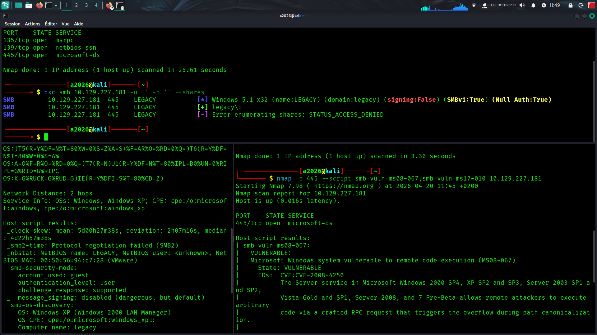

LEGACY_WRITEUP
On commence la machine par un scan nmap pour identifier les ports et services ouverts l'option -p- sert a scanner l'entieretée des ports (1024 - 65535) et pas seulement les Ports Communs (0 - 1023) , L'option -A de Nmap est un scan "agressif" qui combine la détection de l'OS, des versions de services, le balayage par scripts (NSE , option -sC) et le traceroute.Une fois le scan effectue on a trois ports ouvert :
1. Port 135 (MSRPC)
Service : Microsoft Remote Procedure Call.
Rôle : C'est le "central d'aiguillage" de Windows. Il permet à un programme sur une machine de demander à un programme sur une autre machine d'exécuter une tâche.
Usage : Indispensable pour l'administration à distance et pour que les services Windows sachent sur quels autres ports communiquer.
2. Port 139 (NetBIOS Session Service)
Service : NetBIOS sur TCP/IP.
Rôle : Héritage des anciens réseaux Windows (pré-Windows 2000). Il servait à l'authentification et au partage de fichiers.
Usage : Aujourd'hui, il est souvent conservé pour la compatibilité avec de vieux systèmes ou logiciels, mais il est largement remplacé par le port 445.
3. Port 445 (Microsoft-DS / SMB)
Service : Server Message Block (SMB) sur TCP direct.
Rôle : C'est le port moderne pour le partage de fichiers et d'imprimantes dans un réseau local.
Usage : C'est ici que transitent vos dossiers partagés. C’est aussi un port critique car il est souvent visé par des vulnérabilités majeures (comme EternalBlue).
On a donc une vielle version de windows avec un smb ouvert on va lancer un scan nmap afin de voir si la cible est vulnerable au failles connues tel que eternalblue ou encore ms08_067
La cible apparait comme vulnérable a la célèbre faille ms08_067
MS08-067 (Faille critique SMB)
Service : Service Serveur (via le port 445).
Rôle : Il s'agit d'une vulnérabilité d'exécution de code à distance qui permet à un attaquant de prendre le contrôle total d'un système Windows sans authentification.
Usage : Historiquement utilisée par le ver Conficker, elle exploite une faille dans la gestion des requêtes RPC (Remote Procedure Call) mal formées.
Impact : Bien que corrigée depuis 2008, elle reste un cas d'école en cybersécurité pour illustrer l'importance des mises à jour système et de la protection du port 445.

Exploitation via MS08-067 avec Metasploit.

Accès SYSTEM confirmé. Récupération des flags.